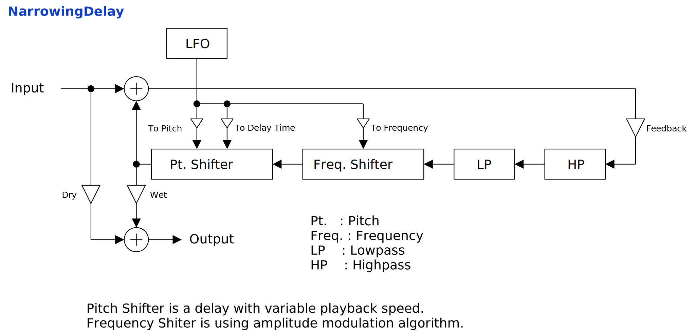

Update: 2023-03-03
NarrowingDelay は直列につないだピッチシフタと周波数シフタがフィードバック経路に設けられたディレイです。フィードバックのたびに音のスペクトラムを周波数軸の方向に広げる、あるいは狭めることができます。どちらかと言えばピッチが一定しない音との相性がいいです。ノートイベントで周波数シフタのシフト量を制御することもできます。
full - VST 3 をダウンロード (github.com) macOS - VST 3 をダウンロード (github.com) full パッケージには次のビルドが含まれています。
Linux ビルドは Ubuntu 20.04 でビルドしています。もし Ubuntu 20.04 以外のディストリビューションを使っているときは、プラグインが読み込まれないなどの不具合が起こることがあります。この場合はビルド手順に沿ってソースコードからビルドしてください。
macOS で使用するときは macOS
パッケージのダウンロードを推奨します。また Apple Developer Program
に加入していないので、インストール時に Gatekeeper
を迂回するように設定する必要があります。詳細は
インストール -> macOS
の節を参照してください。
何かあれば GitHub
のリポジトリに issue を作るか ryukau@gmail.com
までお気軽にどうぞ。
paypal.me/ryukau から開発資金を投げ銭することもできます。現在の目標はよりよい macOS サポートのための M1 mac の購入資金を作ることです。 💸💻
名前が .vst3 で終わるディレクトリを OS
ごとに決められた位置に配置してください。
/Program Files/Common Files/VST3/
に配置します。$HOME/.vst3/ に配置します。/Library/Audio/Plug-ins/VST3/ あるいは
/Users/$USERNAME/Library/Audio/Plug-ins/VST3/
に配置します。DAW によっては上記とは別に VST3 をインストールできるディレクトリを提供していることがあります。詳しくは利用している DAW のマニュアルを参照してください。
解凍して出てきたディレクトリを OS ごとに決められた位置に配置すると使えるようになります。
/Users/$USERNAME/Documents/VST3 Presets/Uhhyou$HOME/.vst3/presets/Uhhyou/Users/$USERNAME/Library/Audio/Presets/Uhhyouプリセットディレクトリの名前はプラグインと同じである必要があります。
Uhhyou ディレクトリが無いときは作成してください。
プラグインが DAW に認識されないときは C++ redistributable
をインストールしてみてください。インストーラは次のリンクからダウンロードできます。ファイル名は
vc_redist.x64.exe です。
Ubuntu 18.0.4 では次のパッケージのインストールが必要です。
sudo apt install libxcb-cursor0 libxkbcommon-x11-0もし DAW がプラグインを認識しないときは、下のリンクの
Package Requirements を参考にして VST3
に必要なパッケージがすべてインストールされているか確認してください。
REAPER の Linux 版がプラグインを認識しないときは
~/.config/REAPER/reaper-vstplugins64.ini を削除して REAPER
を再起動してみてください。
重要: full
パッケージは動作未確認です。以下のファイルは codesign
されていないので削除する必要があるかもしれません。
Contents/Resources/DocumentationContents/x86_64-linuxContents/x86_64-winmacOS
パッケージでは上記のファイルの削除は不要です。また、すべてのパッケージは
codesign コマンドの ad-hoc signing
の状態になっています。
プラグインの初回起動時に「破損している」という趣旨のメッセージが表示されることがあります。この場合は、ターミナルを開いて、解凍した
.vst3
ディレクトリに次のコマンドのどちらか、あるいは両方を適用してみてください。
/path/to/PluginName.vst3
の部分はインストールしたプラグインのパスに置き換えてください。
xattr -rd com.apple.quarantine /path/to/PluginName.vst3
xattr -rc /path/to/PluginName.vst3プラグインは署名されていない (unsigned) 、または公証されていない (un-notarized) アプリケーションとして認識されることがあります。この場合は、警告メッセージが表示された後に、システム環境設定を開いて「セキュリティとプライバシー」 → 「一般」の「このまま開く」ボタンを押してください。以下にリンクした Apple 公式のヘルプページにスクリーンショット付きで同じ手順が掲載されています。「ノータリゼーションを受けていない App や未確認の開発元の App を開きたい場合」を参照してください。
ここまでの手順を経てまだ動かないときはインストール先を
/Library/Audio/Plug-ins/VST3/ あるいは
/Users/$USERNAME/Library/Audio/Plug-ins/VST3/
のいずれか使っていなかったほうに変えてみてください。
上記の方法がすべて上手くいかなかったときは以下の手順を試してみてください。
sudo spctl --master-disable
を実行。上記の手順を実行するとシステムのセキュリティが弱くなるので注意してください。元に戻すには以下の手順を実行してください。
sudo spctl --master-enable
を実行。初回設定時は手動で次のファイルを作成してください。
/Users/ユーザ名/AppData/Roaming/UhhyouPlugins/style/style.json
。$XDG_CONFIG_HOME/UhhyouPlugins/style/style.json 。
$XDG_CONFIG_HOME が空のときは
$HOME/.config/UhhyouPlugins/style/style.json 。/Users/$USERNAME/Library/Preferences/UhhyouPlugins/style/style.json
。プラグインのウィンドウを開くたびに style.json
が読み込まれて更新されます。
既存の色のテーマを次のリンクに掲載しています。
style.json にコピペして使ってください。
style.json の設定例です。
{
"fontFamily": "Tinos",
"fontBold": true,
"fontItalic": true,
"foreground": "#000000",
"foregroundButtonOn": "#000000",
"foregroundInactive": "#8a8a8a",
"background": "#ffffff",
"boxBackground": "#ffffff",
"border": "#000000",
"borderCheckbox": "#000000",
"borderLabel": "#000000",
"unfocused": "#dddddd",
"highlightMain": "#0ba4f1",
"highlightAccent": "#13c136",
"highlightButton": "#fcc04f",
"highlightWarning": "#fc8080",
"overlay": "#00000088",
"overlayHighlight": "#00ff0033"
}以下はフォントオプションの一覧です。
fontFamily: フォントファミリ名。fontBold: ボールドスタイル (太字) を true
で有効、 false で無効。fontItalic: イタリックスタイル (斜体) を
true で有効、 false で無効。カスタムフォントを使用するには、プラグインディレクトリの
*.vst3/Contents/Resources/Fonts に *.ttf
ファイルを配置します。
注意: fontFamily 、
fontBold 、 fontItalic
で設定したフォントファミリ名とスタイルの組み合わせが
*.vst3/Contents/Resources/Fonts 以下のいずれかの
*.ttf ファイルに含まれていないときは VSTGUI
が指定するデフォルトフォントが使用されます。
fontFamily が長さ 0 の文字列 ""
のときはフォールバックとして "Tinos"
に設定されます。長さが 1
以上かつ、存在しないフォントファミリ名が指定されると VSTGUI
が指定するデフォルトフォントが使用されます。
ボールドあるいはイタリック以外のスタイルは VSTGUI がサポートしていないので動作確認していません。該当する例としては Noto フォントの Demi Light や、 Roboto フォントの Thin や Black などがあります。
16 進数カラーコードを使っています。
プラグインはカラーコードの 1 文字目を無視します。よって
?102938 や \n11335577
も有効なカラーコードです。
2 文字目以降のカラーコードの値に 0-9a-f
以外の文字を使わないでください。
以下は設定できる色の一覧です。設定に抜けがあるとデフォルトの色が使われます。
foreground: 文字の色。foregroundButtonOn: オンになっているボタンの文字の色。
foreground か boxBackground
のいずれかと同じ値にすることを推奨します。foregroundInactive: 非アクティブなタブの文字の色。background: 背景色。boxBackground: 矩形の UI 部品の内側の背景色。border: 縁の色。borderCheckbox: チェックボックスの縁の色。borderLabel:
パラメータセクションのラベルの左右の直線の色。unfocused:
つまみがフォーカスされていないときの色。highlightMain:
フォーカスされたときの色。スライダの値の表示にも使用されます。highlightAccent:
フォーカスされたときの色。一部のプラグインをカラフルにするために使用されます。highlightButton:
ボタンがフォーカスされたときの色。highlightWarning: 変更に注意を要する UI
がフォーカスされたときの色。overlay: オーバーレイの色。overlayHighlight:
フォーカスを示すオーバーレイの色。パラメータが割り当てられているコントロールの上で 右クリック すると、 DAW から提供されるコンテキストメニューが開きます。
つまみと数値スライダでは次の操作ができます。
図が小さいときはブラウザのショートカット Ctrl + マウスホイール や、右クリックから「画像だけを表示」などで拡大できます。
図で示されているのは大まかな信号の流れです。実装と厳密に対応しているわけではないので注意してください。

NarrowingDelay はノートイベントによって周波数シフトの量を制御することができます。以下は周波数シフトの量の計算式です。
# `note` は MIDI ノート番号。
(周波数シフトの量) = 2^((note - 69) / 12) * ((Shift [Hz] の値) + lfo).角かっこ [] で囲まれているのは単位です。以下は NarrowingDelay のパラメータで使われている単位の一覧です。
入力信号のゲインです。
NarrowingDelay を通過した信号のゲインです。
フィードバックの量です。
フィードバック経路のハイパス (HP) あるいはローパス
(LP) フィルタのカットオフ周波数です。
ピッチシフタのバッファの長さです。値は厳密なディレイ時間ではなく、大まかな目安です。
Shift \[oct.\] の値が 0.0
でないときはバッファを読み取る速度が変わるので、実際のディレイ時間は表示されている値と一致しなくなります。
Shift [oct.] はピッチシフトの量、
Shift [Hz] は周波数シフトの量です。
入力信号の周波数に対して、ピッチシフトは乗算、周波数シフトは加算を行います。式にすると以下のように書けます。
(出力周波数) ~= (入力周波数) * 2^(ピッチシフトの量) + (周波数シフトの量).つまり、ピッチシフトの量が 0.0 より小さいときはスペクトラムが狭まり、 0.0 より大きいときはスペクトラムが広がります。 NarrowingDelay はスペクトラムを狭めた後に周波数シフトによって入力と出力の基本周波数を一致させれば面白い音になるのではないかという思いつきで作られました。
NarrowingDelay の周波数シフトのアルゴリズムでは周波数を下げるようにシフトすることができません。そのためスペクトラムを広げた後に周波数を下げて基本周波数を一致させることはできません。
LFO による変調量です。以下の 3 つのパラメータに変調をかけることができます。
Delay Time [s]Shift [oct.]Shift [Hz]ステレオチャンネル間で LFO の位相をずらす量です。
LFO の位相に加算される値です。
Rate を左いっぱいに回して LFO の位相を止めているときに
Phase の値を変更することで、 LFO
の位相を制御することができます。また Smoothing の値によって
Phase を動かしたときの応答速度を変えることができます。
LFO の波形を変更するパラメータです。以下は計算式です。
# `phase` の範囲は [0, 1) 。
wave = sin(2 * π * phase^Skew).
lfo = clamp(Clip * wave, -1, 1).チェックを入れるとテンポ同期を有効にします。また同期間隔が変わったときに再生開始時点から導かれる位相へと同期します。
チェックが外れているときは 120 BPM に同期した状態と同じになります。ただし、同期間隔が変わったときに位相を調整しなくなります。
テンポ同期が有効な時の同期間隔を表す分数の分子です。
1/1 のときに 1 小節、 4/4拍子であれば 1/4
のときに 1 拍で LFO が 1 周します。 Rate
が乗算されて周期が変わる点に注意してください。
以下は同期間隔の計算式です。
syncInterval = (Rate) * (Tempo Upper) / (Tempo Lower);テンポ同期が有効な時の同期間隔を表す分数の分母です。
Rate が乗算されて周期が変わる点に注意してください。
同期間隔に乗算される係数です。
Tempo Upper と Tempo Lower を変えずに LFO
の同期間隔を変えたいときに使えます。
パラメータのスムーシング時間です。
例えば Smoothing の値を 0.01
と短くするとパラメータの変更がほぼ瞬時に適用されます。ただし
Smoothing
の値を小さくするとパラメータ変更時のポップノイズが目立つようになります。逆に
Smoothing の値を 1.0
などと長くするとパラメータの値がゆっくりと切り替わるようになります。
オーバーサンプリングの倍率です。
1x: オーバーサンプリングを行いません。 CPU
負荷は下がりますが、エイリアシングノイズが目立ちます。ただし
NarrowingDelay
の出力はそもそも音程が合わないので、エイリアシングノイズも味わいとして使える場面があります。2x: 2 倍のオーバーサンプリングを行います。8x: 8 倍のオーバーサンプリングを行います。 CPU
負荷は上がりますが、エイリアシングノイズが減るので、スペクトラムを広げる設定との相性がいいです。processContext が nullptr であるために
Audacity で音が正しく出力されなかったバグを修正。NarrowingDelay のライセンスは GPLv3 です。 GPLv3 の詳細と、利用したライブラリのライセンスは次のリンクにまとめています。
リンクが切れているときは ryukau@gmail.com
にメールを送ってください。
VST is a trademark of Steinberg Media Technologies GmbH, registered in Europe and other countries.